1. 今回の目標
以下の考え方を学びます。
-
アルゴリズムの効率を測る「計算量」という考え方
-
アルゴリズムの基本演算の回数を、入力サイズの関数として評価する方法
-
同じ問題でも、アルゴリズムによって計算時間が大きく異なること
-
身近な整列問題を例に、具体的な計算量の分析手法
実際のプログラミングでも、このような視点でアルゴリズムを選択することが重要になります。
|
読み進め方
最初は、整列の具体例 → 時間計算量とO記法 → 実用的な整列アルゴリズム、の順で読み進めてください。 「厳密な定義」は折りたたんであります。後半の「発展：問題そのものの限界」では、アルゴリズムを工夫しても越えられない限界と、その証明を扱います。初読では結論だけ押さえて、証明は後から読んで構いません。 |
2. アルゴリズム
アルゴリズムとは、与えられた問題を解くための有限の手順のことです。問題には一般に、入力に対応する出力があります。この両者を結びつける手順をアルゴリズムといいます。
高校で習う整数の最大公約数を求める手順は、よく引き合いに出されるアルゴリズムの1つで、ユークリッドにより紀元前300年頃に示されたため、「ユークリッドの互除法」として知られています。
|
コンピューター関連の用語には、カタカナ語が多すぎることから、かつて様々な専門用語をカタカナを用いない日本語に翻訳する試みがありました。コンピューター分野のノーベル賞にあたるチューリング賞受賞者であるドナルド・クヌースによるコンピューター科学のバイブル「The Art of Computer Programming」の最初の和訳に、その試みの一部をみることができます。
算法は、日本産業規格JIS X 0001:1994（情報処理用語―基本用語）にも、アルゴリズムとともに併記されており、中国語でもアルゴリズムを算法といいます。 |
コンピューターに問題を解かせるときに、いつ計算が終わるのか、だいたいの見積もりができないと困ることになります。そこで、まずどのように問題の難しさを見積もるのか、簡単な問題を例に見てゆきます。
今回は、整列（ソーティング）問題を題材にして、アルゴリズムの計算量について解説します。計算量には、時間計算量と空間計算量があります。時間計算量はアルゴリズムの速さを示す量です。空間計算量はアルゴリズムで必要となる記憶領域の大きさを示す量です。難しい問題を解くときには、計算の途中結果を記憶しておく必要があり、たくさん計算用紙を消費してしまう可能性があり、その観点から計算量を考える指標です。ここでは、時間計算量のみを扱うことにします。
2.1. 整列（ソーティング）問題
与えられたデータを小さい順（昇順）、または大きい順（降順）に並べ替える作業は、様々な場面で必要になります。トランプを数の昇順に並べ替えたり、年賀状を人名の「あいうえお順」（辞書順）に並べ替えたり、日常でもたびたび整列問題を解いているはずです。このように、比較可能な複数の対象を順番に並べる作業を、整列（ソーティング）と呼びます。
与えられたデータの要素が、数字や文字列のように、大小関係を比較できる対象であるとしたら、あらかじめデータを整列しておくと、高速に発見することもできるようになります。
値は整数や文字列のように大小比較ができる対象であれば何でも構いません。文字列でも、人名のあいうえお順で並べ替える例のように順序付けが存在しています（文字列に一般に用いられる順序を辞書順とよびます）。
整列の例
【1】整数の並び
| 入力 |
\(\langle 9,1,4,3,7,6,2,3\rangle\) |
| 出力 |
\(\langle 1,2,3,3,4,6,7,9\rangle\) |
【2】文字列の並び
| 入力 |
\(\langle\text{dog, cat, rat, pig, fox, cow, bat}\rangle\) |
| 出力 |
\(\langle\text{bat, cat, cow, dog, fox, pig, rat}\rangle\) |
2.2. 整列アルゴリズム
挿入ソート
まず、もっとも単純な整列アルゴリズムの1つである挿入ソートを紹介します（挿入ソートと同様のシンプルな整列アルゴリズムとして、バブルソートや選択ソートが知られています）。
(1). 2番目の値をそれより左側の並びの適切な位置に挿入する
(2). 3番目の値をそれより左側の並びの適切な位置に挿入する
(3). 4番目の値をそれより左側の並びの適切な位置に挿入する
:
(\(n-1\)). \(n\) 番目の値をそれより左側の並びの適切な位置に挿入する
このアルゴリズムによって整列する例を以下に示します。 入力の並びとして先程の例【1】の
を用います。
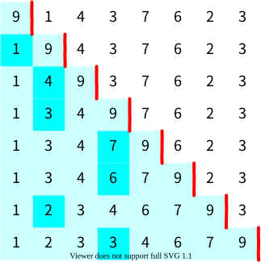
値を赤線より左側の水色の領域の適切な位置に挿入する際には以下のように値を比較します。
-
図の1行目では先頭の9を整列済みの領域、赤線の右側2番目以降を未整列の領域とします。1行目で赤線のすぐ右にある値1を2行目で整列済みの適切な位置に挿入します。挿入する際には、整列済みの領域の末尾から先頭に遡りながら、挿入位置を探します。
-
2行目では、まず9と1を比較して、1の方が小さいため、9を1つ右にずらし、最後に空いた先頭の位置に1を挿入します。(比較1回)
-
3行目では、4と9を比較して、4の方が小さいため、9を1つ右にずらします。次に、4と1を比較すると4の方が大きいため、最後に空いた位置に4を挿入して、挿入作業はこれでおしまいです。(比較2回)
-
4行目では、3と9を比較して、3の方が小さいため、9を1つ右にずらします。次に、3と4を比較すると3の方が小さいため、4も1つ右にずらします。3と先頭の1を比較すると3の方が大きいため、最後に空いた位置に3を挿入して、挿入作業はこれでおしまいです。(比較3回)
比較回数が整列アルゴリズムの時間計算量を決定づけていますので、比較回数を数えることにします。計算量を考える場合は、一般に \(n\) 個の並びの中で、もっとも時間がかかる入力を与えた最悪のケースを考えます。時間計算量を並びの値間の比較回数であるとすると、最悪の場合、赤線の左側の水色の値すべてと比較が必要になりますので、以下のようになります（最後の行は整列が終了しているため比較が発生しないので、1行目から7行目までの水色の数を数えればよいことがわかります）。
となり、28回です。この入力例では実際の並びの値間の比較回数は図より
となり、22回で済んでいます。列の一番右側にあった「3」を左側の整数列と比較する際に、すでに列の左側にあるもう1つの「3」と等しいことがわかった時点で、それ以上左側の数字との比較は必要ないことに注意をしてください。つまり、「9,7,6,4,3」の5つの数字との比較をすればよいので一番右側にあった「3」と左側の数字との比較回数は5となります。
入力として与える整数列の長さ（入力サイズ） \(n\) に対する最大の比較回数を \(T(n)\) とおくと、以下のようになります。
\(T(n)=\frac12n^2-\frac12n\) で入力サイズ \(n\) の増加に対して支配的なのは \(\frac12n^2\) の項です。つまり、\(n\) が増加するとき、項 \(\frac12n\) の影響は項 \(\frac12n^2\) の影響に比べると微々たるものですので、計算量を考える際には、項 \(\frac12n^2\) のみを考慮することにします。また、増加傾向を考える際には、定数倍の \(\frac12\) も捨象して、\(T(n)=\text O(n^2)\) と表記します。
挿入ソートのアルゴリズムのプログラム例が以下のコードです。あくまでも例示ですので、理解する必要はありません。このくらいのコード量で書けるということがわかれば大丈夫です。
a=[9,1,4,3,7,6,2,3]
n=length(a)
for i=2:n
t = a[i]
j = i - 1
while j>=1 && a[j] > t
a[j+1] = a[j]
j -= 1
end
a[j+1] = t
endこのコードはプログラミング言語 Julia で記述してみました（なぜ Julia を用いたかというと、単に私が好きな言語だからです…）。
実際にこのプログラムを使って挿入ソートが、\(n\)個の値を整列(ソート)するのに必要な比較回数(≒計算時間)を計測してグラフにしてみました。
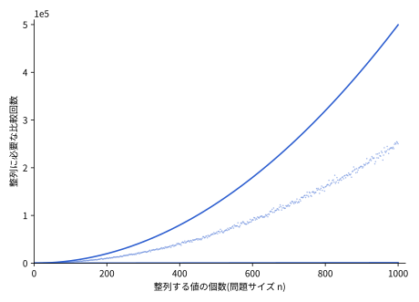
このグラフで、一番上のなめらかな青色の曲線は、
のように完全に降順に並んだ値の列を入力として与えた場合で、挿入ソートでは、このような入力の場合、最悪の計算量になります。このグラフは上記で計算した理論値 \(T(n)=\frac12n^2-\frac12n\) と一致します。
一番下のほぼ水平にみえる青色の直線は、もともと整列済みの
のような値の列を入力として与えた場合です。挿入ソートでは、このような入力が最良の計算量となり、\(T(n)=n-1\) となります。つまり、もっとも速く計算できる場合は入力として与えた値の数 \(n\) に比例する時間がかかります。一番下の線がほぼ水平にみえるのは、縦軸の目盛りが最大 \(5\times 10^5\) まであるためで、縦軸と横軸を同じ尺度で描けば傾き1の直線になることに注意をしてください。
真ん中の雲のように広がっている点は、ランダムに順序を並べ替えた値の列を入力として与えた場合の比較回数を表しています。最悪の計算量よりは定数倍速いものの、やはり2次曲線である放物線を描いていることがわかります。この部分が挿入ソートの平均的な計算量であると考えることができます。
この整列(ソート)アルゴリズムは、値の性質としては大小比較しか用いていないことに注意してください。これ以外の情報を用いると計算量が変わってきます。
選択ソート
挿入ソートと並んでよく引き合いに出される素朴な整列アルゴリズムに、選択ソートがあります。考え方はとても単純で、未整列の部分から毎回いちばん小さい値を選び、左から順に確定させていくだけです。
-
1番目に、全体の中から最小値を選び、先頭に置く
-
2番目に、残りの中から最小値を選び、2番目に置く
-
これを末尾まで繰り返す
下の図では、各行で残りの中の最小値を赤い丸で示し、それを左の整列済み領域（水色）に確定させています。
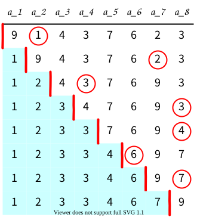
選択ソートでは、\(n\) 個から最小値を選ぶのに \(n-1\) 回、次に \(n-2\) 回……と比較するので、比較回数は入力によらず常に
です。挿入ソートが、ほぼ整列済みの入力では \(\text O(n)\) まで速くなったのに対し、選択ソートは比較回数が入力によらず \(\frac{n(n-1)}2\) 回、つまりどんな入力でも \(\Theta(n^2)\) かかる点が異なります（\(\Theta\) という記号の正確な意味は後の節で説明します。ここでは「\(n^2\) に比例する時間が常にかかる」と読んでください）。
計数ソート
「並びの値からの情報として大小比較の結果しか用いない」という前提条件をなくすと、もっと速いアルゴリズムが作れるかもしれません。たとえば、並びの値の範囲があらかじめわかっていて、比較的狭い範囲であったとします。前の例 \(\langle 9,1,4,3,7,6,2,3\rangle\) をもう一度用いると、値の範囲が1から9までに限られるとして、それがあらかじめわかっていたとします。すると、次のような方法が考えられます。
-
あらかじめ値の範囲1から9に対応する箱を9個用意しておき、各箱のカウントを0にセットしておく
-
\(\langle 9,1,4,3,7,6,2,3\rangle\) の先頭から値を1つずつ読み込む
-
1番目の値9 → 9番目の箱のカウントに1を加える
-
2番目の値1 → 1番目の箱のカウントに1を加える
-
3番目の値4 → 4番目の箱のカウントに1を加える
: -
8番目の値3 → 3番目の箱のカウントに1を加える
-
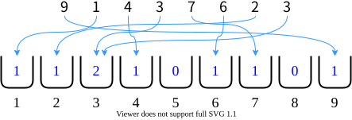
すると、上図のように \((1,1,2,1,0,1,1,0,1)\) の並びが得られます。後は先頭から順番にカウントをみてゆき、カウントの数だけ、対応する値を出力すれば、整列完了です。
1 2 3 3 4 6 7 9
入力を読む手間は n 個分、箱を初期化して順に調べる手間は k 個分、結果を書き出す手間は n 個分です。したがって、全体の時間計算量は
となります。今回の例では \((n,k)=(8,9)\) ですが、これはすべての操作がちょうど \(8+9=17\) 回で終わるという意味ではありません。範囲の広さ k も時間とメモリを左右する点が大切です。 値の範囲があらかじめわかっていても、たとえば、64ビットで表現できる整数の範囲となると、コンピューターの記憶装置を使い尽くしてしまいますし、膨大な時間がかかることになります。以下に計数ソートのプログラム例を掲載します（やはり Julia で記述してあります）。
a=[9,1,4,3,7,6,2,3]
count = zeros(Int, 9) # 9個箱を用意
for i in a # 並びから値を順に取り出してカウント
count[i] += 1
end
result = Int[]
for i=1:9
if count[i] > 0
for j=1:count[i]
push!(result, i) # カウントの回数値を並べる
end
end
end計数ソートは非常に高速ですが、以下の制限があります。
- 適用可能な場合
-
-
値の範囲が事前にわかっている
-
値の範囲が比較的狭い（例：0-100の整数）
-
メモリに余裕がある
-
- 適用困難な場合
-
-
浮動小数点数（値の範囲が広すぎる）
-
文字列（直接的な範囲指定が困難）
-
32ビット整数全体（2^32 = 約43億個の箱が必要）
-
このため、実際のプログラミングでは比較ベースの整列アルゴリズムが主流となっています。
2.3. 計算モデル
問題によっては通常のコンピューターではなく量子コンピューターを使うと計算が速くなるかもしれません。そこで、計算量を議論するときには、どのようなコンピューターを用いて計算するかを定めなくてはいけません。これを計算モデルとよびます。
並べ替えの計算モデルに、アナログ世界の物理モデルを持ち込むことも考えられます。たとえば、並びの値と同じ長さの棒を用意します。\(\langle 9,1,4,3,7,6,2,3\rangle\) の例を再度もちいると、値が9には9cmの棒、値1には1cmの棒という具合です。そして、平らなテーブルの上で、8本の棒の束を束ねて揃えます。束の上部に手のひらをあて、手のひらに最初に触れた最も長い棒を抜き取り、順に並べます。これを棒がなくなるまで繰り返すと整列完了です。抜き取る操作だけを数えれば8回です。ただし、棒の準備・長さの精度・最長の棒を取り出す操作の費用を省いています。通常のコンピューターで8ステップで整列できるという意味ではありません。何を1回と数えるかで見積もりが変わる例です。
この授業では計算モデルについては詳細には立ち入らず、通常のパソコン（ノイマン型コンピューター）を用いると考えてください。ただし、メモリは無尽蔵に使えるものとします。このような計算モデルとしてランダムアクセス機械（Random Access Machine; RAM）がよく用いられます。ランダムアクセス機械では、メモリ上の値には定数時間(例えば1ステップ)で、アクセスして読み書きができます。
3. 時間計算量
さて、ここから少々ややこしい話をします。理論的に「比較のみを用いる整列問題」そのもののもつ難しさを考えるときに、どのような指標が役に立つでしょうか。
これまでに見てきた時間計算量の評価について、まとめておきます。
-
入力サイズに対して、アルゴリズムの計算が終了するまでに実行される値の比較等の基本演算の回数を、計算時間を評価する基準に用いる
-
入力サイズの増加に対して計算時間がどれだけ増加するかを評価する
-
この章では主に、同じサイズの入力の中でもっとも時間がかかる最悪の場合を評価する（時間計算量には最良・平均などの評価もある）
我々が時間計算量で興味があるのは、入力サイズの増加に対する時間計算量の増加の度合いです。そこで、増加に最も寄与する項だけを残し、それ以外の項や定数の係数は無視して単純化します。たとえば \(T(n)=\frac12n^2-\frac12n\) は \(T(n)=\text O(n^2)\) と表記します。このような表記法をビッグオー表記またはオーダー表記といいます。なぜこの2つを捨ててよいのかは、後の節で説明します。
時間計算量を考える場合には、挿入ソートのグラフで見たように、次の3つのケースが考えられます。
- 最悪計算量
-
サイズ \(n\) の入力の中で、もっとも時間のかかるケースを計算量とする
- 最良計算量
-
サイズ \(n\) の入力の中で、もっとも時間のかからないケースを計算量とする
- 平均計算量
-
サイズ \(n\) の入力がどの確率で現れるかを定め、その分布に従う計算時間の期待値を求める。すべての入力が同じ確率なら単純な平均になる
問題そのものが持つ難しさを検討する際には最悪計算量が最も一般的に用いられる指標です。
3.1. ビッグオー表記の考え方
計算量の比較で本当に知りたいのは、「入力が大きくなったとき、計算時間がどんな勢いで増えてゆくか」です。この勢い（増え方のクセ）だけを取り出すために、ビッグオー表記では思い切って次の2つの情報を捨ててしまいます。
- 定数の係数を捨てる
-
\(\frac12n^2\) でも \(100n^2\) でも、ビッグオー表記ではどちらも \(\text O(n^2)\) です。係数は、使うコンピューターの速さや、1ステップの数え方の違いで変わってしまう量です。速いコンピューターを使えば係数は小さくできますが、増え方のクセそのものは変えられません。
- 低い次数の項を捨てる
-
\(T(n)=\frac12n^2-\frac12n\) では、\(n\) が大きくなるほど \(\frac12n^2\) が圧倒的に大きくなり、\(\frac12n\) の影響は相対的にどんどん小さくなります。そこで、いちばん勢いよく増える項（支配的な項）だけを残します。
この2つを捨てた結果が \(T(n)=\text O(n^2)\) です。「十分大きな入力では、\(n^2\) の定数倍で上から抑えられる」という意味です。上限の評価なので、実際の増え方がもっと遅い関数も含みます。
代表的な関数の増え方を、入力サイズを2倍にしたときの値で比較してみましょう。次の表は関数そのものの比較です。O記法だけから、実測時間の倍率が決まるわけではありません。
| 関数 \(f(n)\) | \(f(2n)\) は \(f(n)\) と比べて… |
|---|---|
\(1\) |
同じ |
\(\log_2 n\) |
1増える |
\(n\) |
2倍 |
\(n\log_2 n\) |
2倍より少し大きい（\(n>1\)） |
\(n^2\) |
4倍 |
\(n^3\) |
8倍 |
\(2^n\) |
\(2^n\) 倍 |
計算時間が \(c n^2\) に近似できる場面では、入力が2倍になると約4倍の時間がかかると見積もれます。これはあくまでモデルによる見積もりです。次のグラフで関数どうしの増え方を比べてください。
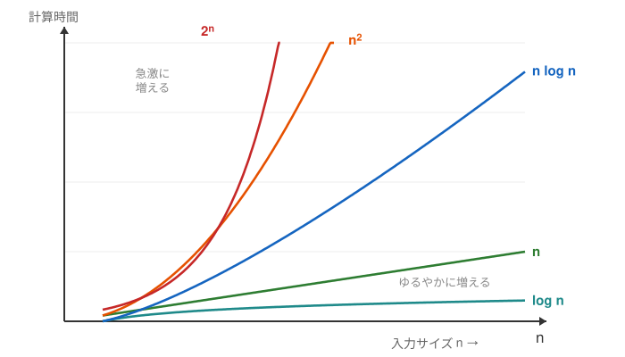
このように、係数と低次の項を無視して増え方だけでざっくり分類することを、入力サイズが十分大きいときの振る舞いに着目するという意味で漸近的に評価するといいます。ビッグオー表記による評価を漸近計算量とよびます。
O は上から抑える評価です。さらに、下から抑える評価を \(\Omega\)、上下から挟んで同程度の増え方を示す評価を \(\Theta\) と書きます。厳密な定義は後の折りたたみ欄にまとめています。
「最悪計算量」とO記法を混同しない
ここで、多くの人がつまずくポイントを整理しておきます。「最悪計算量」と「O記法」は、どちらも計算量の話に出てくるためよく混同されますが、別の軸の概念です。
-
軸1(どの入力で測るか): 同じサイズ \(n\) の入力でも、中身によって計算時間は変わります。そこで「最も時間のかかる入力で測る(最悪)」「平均で測る」「最も時間のかからない入力で測る(最良)」のどれかを選びます。どれを選んでも、結果は \(n\) の関数になります。挿入ソートなら、最悪計算量は \(T_{\text{worst}}(n)=\frac{n(n-1)}2\)、最良計算量は \(T_{\text{best}}(n)=n-1\) という関数です。
-
軸2(関数の増え方をどう評価するか): 軸1で得られた関数を、増え方だけに着目して大雑把に評価する「ものさし」がO・Ω・Θです。上からおさえるのがO、下からおさえるのがΩ、上下からはさむのがΘでした。このものさしは、どの関数に対しても使えます。
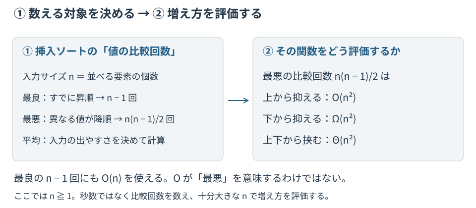
挿入ソートで確かめてみましょう。最悪計算量 \(\frac{n(n-1)}2\) という1つの関数を、\(\text O(n^2)\) とも \(\Omega(n^2)\) とも \(\Theta(n^2)\) とも評価できます。また、最良計算量 \(n-1\) を \(\text O(n)\) と、Oを使って評価することもできます。
|
「O記法=最悪の場合、Ω記法=最良の場合」という理解は誤りです。最悪・最良は「どの入力で測るか」の選択であり、O・Ωは「得られた関数を上下どちらからおさえるか」の選択です。「挿入ソートは \(\text O(n^2)\) のアルゴリズム」という言い回しは、正確には「挿入ソートの最悪計算量が \(n^2\) の定数倍で上からおさえられる」ことを述べています。 |
これで、計算量を議論するための指標である最悪計算量とビッグオー表記について準備ができました。
次に知っておく必要があるのは、ビッグオー表記による計算量の目安です。以下にビッグオー表記の関数を増加率の小さい順に並べます（ここでは、上界を用います）。これは増え方を比較する目安です。あるアルゴリズムの上界だけで、その問題を解くすべての方法の限界まで決まるわけではありません。
| 名称 | 関数（上界表記） |
|---|---|
定数 |
\(\text O(1)\) |
対数 |
\(\text O(\log n)\) |
線形 |
\(\text O(n)\) |
線形対数（linearithmic） |
\(\text O(n\log n)\) |
2次多項式 |
\(\text O(n^2)\) |
3次多項式 |
\(\text O(n^3)\) |
指数 |
\(\text O(c^n),\quad c>1\) |
階乗 |
\(\text O(n!)\) |
つまり関数の増加には以下のような階層関係があります。
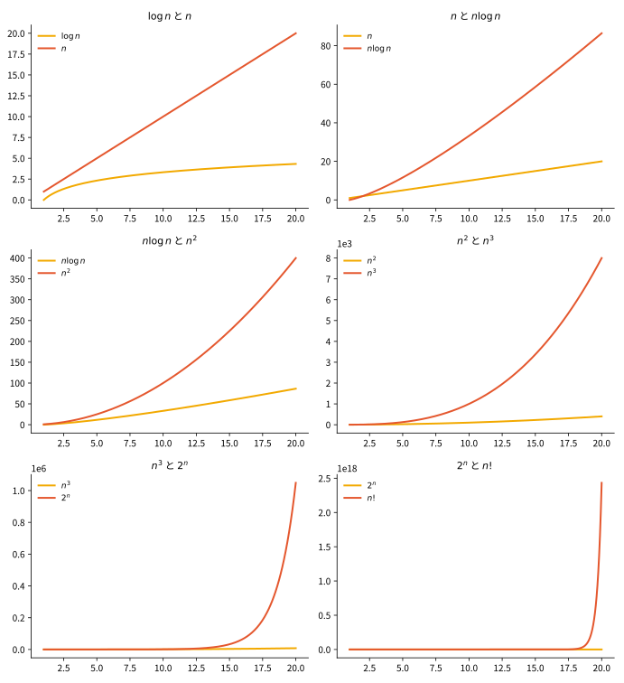
ぜひ、Excel等のグラフ描画ツールによって実際に上記の関数のグラフを自分で描いてみて、この階層を実感してみてください。
発展：O・Ω・Θの厳密な定義と計算例（初読では省略可）
上の「ざっくりした増え方」を式で正確に述べると、次のようになります。上からおさえる \(\text O\)、下からおさえる \(\Omega\)、上下からはさむ \(\Theta\) の3つを定義します。
-
表記 \(T(n)=\text O(f(n))\) は 関数 \(c\cdot f(n)\) が \(T(n)\) の上界であることを意味します。つまり、ある正の定数 \(c\) が存在し、十分大きな \(n\) については、常に \(0\leq T(n)\leq c\cdot f(n)\) が成り立ちます。
-
表記 \(T(n)=\Omega(f(n))\) は 関数 \(c'\cdot f(n)\) が \(T(n)\) の下界であることを意味します。つまり、ある正の定数 \(c'\) が存在し、十分大きな \(n\) については、常に \(T(n)\geq c'\cdot f(n)\geq 0\) が成り立ちます。
-
表記 \(T(n)=\Theta(f(n))\) は 関数 \(c\cdot f(n)\) が \(T(n)\) の上界であり、かつ、\(c'\cdot f(n)\) が \(T(n)\) の下界であることを意味します。つまり、ある正の定数 \(c\) と \(c'\) が存在し、十分大きな \(n\) については、常に \(0\leq c'\cdot f(n) \leq T(n)\leq c\cdot f(n)\) が成り立ちます。
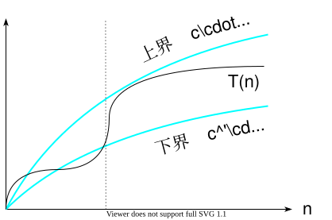
上の図は、\(T(n)\) が下側の関数 \(c'\cdot f(n)\) と上側の関数 \(c\cdot f(n)\) のあいだにぴったりはさまれている様子、つまり \(T(n)=\Theta(f(n))\) を表しています。先ほどの「だいたい \(n^2\) の勢い」という言い方を、定数 \(c, c'\) で上下からはさむ形に置き換えたものが、この厳密な定義です。
ビッグオー表記は、\(T(n)=\text O(f(n))\) のように等式の形で書きますが、これは慣習による表記であり、実際には左辺と右辺は等しくありません。つまり、\(\text O(f(n))=T(n)\) のような向きでは書きません。\(\text O(f(n))\) は、十分大きな入力で \(f(n)\) の定数倍以下になる関数の集合ですので、本来は \(T(n)\in\text O(f(n))\) と書くのが適当ですが、コンピューター科学分野では慣習として \(T(n)=\text O(f(n))\) という表記を使っています。
上記の定義から、以下の2項目も成り立ちます。
-
\(g(n)=\text O(f(n)) \Leftrightarrow f(n)=\Omega(g(n))\)
-
\(T(n)=\text O(f(n)) \text{ かつ } T(n)=\Omega(f(n)) \;\;\Leftrightarrow\;\; T(n)=\Theta(f(n))\)
-
\(T(n)=2n+5\) の上界
\(n\geq 5\) のとき常に \(2n+5\leq 3n\) となることから、\(T(n)=\text O(n)\)
(ここでは、\(c=3\)） -
\(T(n)=2n+5\) の下界
\(n\geq 0\) のとき常に \(2n+5\geq 2n\) となることから、\(T(n)=\Omega(n)\)
(ここでは、\(c'=2\)） -
よって、\(T(n)=\Theta(n)\)
-
\(T(n)=n^3+10n^2+200n\) の上界
\(n\geq 20\) のとき常に \(n^3+10n^2+200n\leq 2n^3\) となることから、\(T(n)=\text O(n^3)\)
(ここでは、\(c=2\)）
ちなみに、値のおさえ方は一通りではありません。以下のように考えても構いません。
-
\(T(n)=n^3+10n^2+200n\)
\(f(n)=211n^3\) とおくと \(n\geq 0\) のとき常に \(T(n)\leq f(n)\) となることから、\(T(n)=\text O(n^3)\)
下界についても同様ですので省略します。
\(\text O(1)\) は、十分に大きな \(n\) については関数の値が、1の定数倍、つまりある定数 \(c>0\) でおさえられるような関数の集合を表しています。
\(T(n)=\text O(n^3)\) のとき、十分大きな \(n\) について（つまり漸近的に） \(T(n)\) を上からおさえられればよいので、\(T(n)=\text O(n^4)\) でも \(T(n)=\text O(n^{10})\) でも \(T(n)=\text O(2^n)\) でもあることに注意をしてください。一般的にはできるだけぎりぎりのところで \(T(n)\) をおさえます。あきらかに \(T(n)=\text O(n^3)\) でおさえられるのであれば、通常は \(T(n)=\text O(n^4)\) とは書きませんが、定義上は間違いではありません。できるだけぎりぎりの関数で評価をすることを「tight に評価する」といいます。
同様に、\(T(n)=\Omega(n^3)\) のとき、漸近的に \(T(n)\) を下からおさえられればよいので、\(T(n)=\Omega(n^2)\) でも \(T(n)=\Omega(n\log n)\) でも \(T(n)=\Omega(1)\) でもあることに注意をしてください。
4. 実用的な整列アルゴリズム
4.1. クイックソート
整列アルゴリズムでもっともポピュラーかつよく使われているのは、クイックソートというアルゴリズムです。最悪時間計算量は \(\text O(n^2)\) ですが、平均時間計算量は \(\text O(n\log n)\) で、しかも後で述べるように基準値（ピボット）をランダムに選べば、最悪時間計算量になることは確率的にほとんどありません。
クイックソートを、トランプで説明してみます。
-
山札の中から1枚のカードを適当に抜き出します。
-
抜き出したカードの値が「♠8」だったとします。8以下の値を左側の山札、8より大きい値を右側の山札に分けます。
-
分けた2つの山札それぞれで、さらに(1)に戻り、左右に分けるカードがなくなるまで同じことを繰り返します。
最後に、左右に分かれた山札を左から右につなげてゆくと、整列したカードが得られます。
このように、クイックソートは分割統治法にもとづいています。大きな問題を、基準値（ピボット）を使って2つの小さな問題に分割し、それぞれを再帰的に統治（整列）して、最後に結果を結合します。
分割のしくみ
8個の数値 \(\langle 9,1,4,3,7,6,2,3\rangle\) で具体的に見てみましょう。まず基準値を1つ選びます（ここでは説明のため「6」とします。基準値の選び方は後で述べるように性能に影響します）。基準値と比べて、6より小さいグループと6より大きいグループに振り分けます。基準値と等しい値が現れた場合は、基準値と一緒にその位置で確定させます。つまり「基準値より小さい」「基準値と等しい」「基準値より大きい」の3つに分割します。
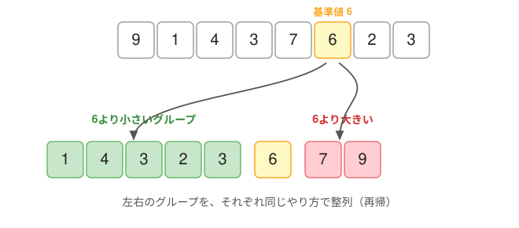
あとは、左右のグループそれぞれに同じ操作（基準値を選んで分割する）を、グループの要素が1個以下になるまで繰り返すだけです。この分割の繰り返しを木構造で表すと、次のようになります。
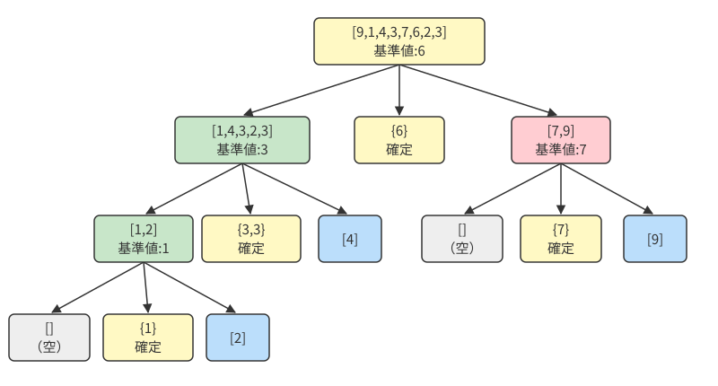
各段階での配列の状態をまとめると、次の表のようになります。
段階 |
配列の状態 |
操作 |
|||||||
|---|---|---|---|---|---|---|---|---|---|
0 |
9 |
1 |
4 |
3 |
7 |
6 |
2 |
3 |
初期状態 |
1 |
1 |
4 |
3 |
2 |
3 |
6 |
7 |
9 |
基準値6で分割 |
2a |
1 |
2 |
3 |
3 |
4 |
6 |
7 |
9 |
左側を基準値3で分割 |
2b |
1 |
2 |
3 |
3 |
4 |
6 |
7 |
9 |
右側を基準値7で分割 |
3a |
1 |
2 |
3 |
3 |
4 |
6 |
7 |
9 |
[1,2]を基準値1で分割 |
最終 |
1 |
2 |
3 |
3 |
4 |
6 |
7 |
9 |
整列完了 |
凡例：緑 = 基準値より小さい、黄 = 基準値と等しい（確定）、赤 = 基準値より大きい、青 = 整列済み
比較回数
各段階での比較回数を数えると、次のようになります。
段階 |
対象配列 |
比較回数 |
説明 |
|---|---|---|---|
1 |
[9,1,4,3,7,6,2,3] |
7回 |
基準値6と他の7個を比較 |
2a |
[1,4,3,2,3] |
4回 |
基準値3と他の4個を比較 |
2b |
[7,9] |
1回 |
基準値7と9を比較 |
3a |
[1,2] |
1回 |
基準値1と2を比較 |
合計 |
13回 |
ここでは、2つの値の大小・等しさを一度で判定する比較を1回と数えて、合計13回です。< と == を別々に評価する実装では、その評価回数は増えます。比較回数を別のアルゴリズムやプログラムと比べるときは、何を1回と数えるかをそろえましょう。
クイックソートの性能
理想的には、基準値が配列をほぼ半分に分けてくれます。すると分割の深さは \(\log n\) 段ほどで、各段で全体をひととおり比較するので \(\text O(n)\) 回、あわせて \(\text O(n\log n)\) になります。これは均等に分割できる場合の説明です。ランダムな基準値を使う場合の期待計算量も同じ評価になりますが、その証明には分割の確率を考える必要があります。
一方、毎回いちばん小さい（または大きい）値を基準値に選んでしまうと、グループが1個ずつしか減らず、深さが \(n\) 段になってしまいます。たとえば、すでに昇順に整列済みの \(\langle 1,2,\ldots,n\rangle\) に対して、いつも先頭を基準値にすると、この最悪の状況が起こります。このときの比較回数は
となり、挿入ソートと変わらなくなってしまいます。
この2つの状況を、分割の様子を表す再帰木で対比すると下図のようになります。
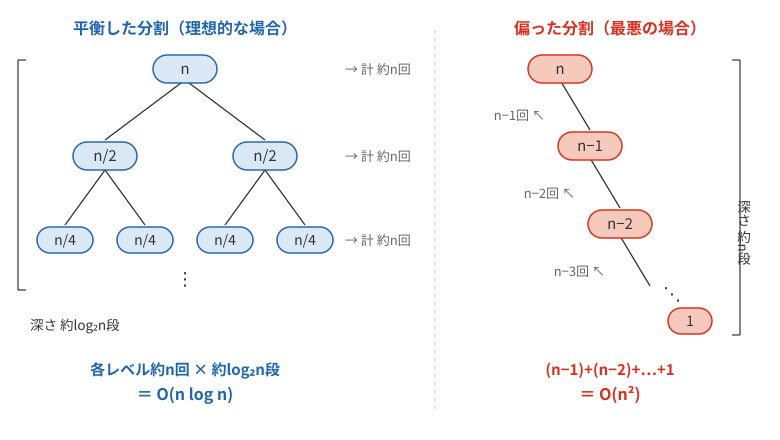
値がすべて異なる場合、基準値を一様ランダムに選べば、どの入力に対しても期待時間は \(\text O(n\log n)\) です。3つの値の中央値を使う方法もよく用いられますが、それだけで最悪時間の保証が変わるわけではありません。同じ値が多い入力には、等しい値をまとめる3分割などの工夫が有効です。また、要素数の少ない部分配列では挿入ソートに切り替えると、さらに速くなります。クイックソートが広く使われているのは、平均的にはこの \(\text O(n\log n)\) が達成でき、しかも係数が小さく（実際に速く）、元の配列の中で並べ替える実装ができる（ただし、再帰の管理には追加のメモリを使う）からです。
|
クイックソートは機械翻訳から生まれた
クイックソートを考案したのは、英国の計算機科学者トニー・ホーア（C. A. R. Hoare）です。生まれたきっかけは機械翻訳でした。 ホーア本人の聞き取り記録によると、モスクワ大学への留学中に考えていたのは、ロシア語から英語への機械翻訳でした。当時の辞書は磁気テープにアルファベット順で記録されていたため、文中の単語も先に並べ替えると、テープを一度読むだけでまとめて検索できました。単語ごとにテープを巻き戻す手間を省けたのです。 そこで整列法を考え、最初に思いついたバブルソートは遅そうだと退け、次にクイックソートを考案した、と本人は述べています。「翻訳」という目的から「辞書を効率よく引く」、さらに「単語を並べ替える」へ問題を分けた先に、広く使われるアルゴリズムが生まれました。 |
ほかの整列アルゴリズムとの比較
クイックソートと挿入ソートの計算量（比較回数）を比較してグラフにしました。入力はランダムな数値の並びです。赤色の点がクイックソート、青色の点が挿入ソートです。平均計算量はそれぞれ \(\text O(n\log n)\) と \(\text O(n^2)\) です。入力サイズ \(n\) が大きくなるほど、両者の差が広がってゆくことがわかると思います。
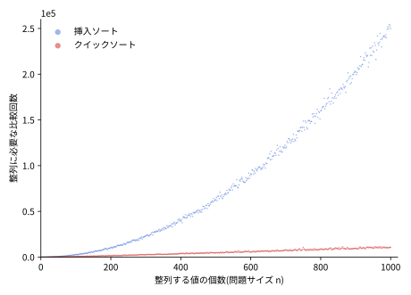
代表的な整列アルゴリズムの計算量を表にまとめます。
| アルゴリズム | 最良時間計算量 | 平均時間計算量 | 最悪時間計算量 | 空間計算量 | 安定性 |
|---|---|---|---|---|---|
挿入ソート |
\(\text O(n)\) |
\(\text O(n^2)\) |
\(\text O(n^2)\) |
\(\text O(1)\) |
安定 |
クイックソート |
\(\text O(n\log n)\) |
\(\text O(n\log n)\) |
\(\text O(n^2)\) |
平均 \(\text O(\log n)\)、単純な再帰では最悪 \(\text O(n)\) |
不安定 |
マージソート |
\(\text O(n\log n)\) |
\(\text O(n\log n)\) |
\(\text O(n\log n)\) |
\(\text O(n)\) |
安定 |
ヒープソート |
\(\text O(n\log n)\) |
\(\text O(n\log n)\) |
\(\text O(n\log n)\) |
\(\text O(1)\) |
不安定 |
|
安定性とは 同じ値をもつ要素どうしの、元の並び順が整列後も保たれる性質のことです。 たとえば学生の一覧を点数順に整列するとき、同じ点数の学生が何人かいたとします。安定な整列では、その同点の学生たちは元の並び順のまま残ります。不安定な整列では、順序が入れ替わることがあります。まず学年順に並べ、次に点数順に並べる、といった二段階の整列をするときに、この性質が効いてきます。 |
実世界での使用例
標準ライブラリでは、用途や実装に応じてさまざまな整列法が使われています。関数名だけからアルゴリズムが決まるとは限りません。
-
C言語：
qsort()は整列関数の名前。規格がクイックソートの使用を指定しているわけではない -
Java：
Arrays.sort()（基本型）に Dual-Pivot Quicksort（基準値を2つ使う改良版） -
C++：
std::sort()（多くの実装が IntroSort。クイックソートに、分割が深くなりすぎたらヒープソートに切り替える保険を組み合わせたもの） -
Python：Timsort（マージソートと挿入ソートを組み合わせた安定ソート）
|
AIがアルゴリズムを見つける
整列のような基本的なアルゴリズムは、人間が何十年もかけて改良してきました。2023年、Google DeepMind は、囲碁や将棋を攻略した AlphaGo・AlphaZero の強化学習の技術を応用し、「より速い整列の手順を見つけるゲーム」としてこの問題に取り組ませた AlphaDev を発表しました。 AlphaDev が狙ったのは、3〜5個といったごく短い並びを整列する部分です。短い整列は、大きな整列の中で何度も呼び出される土台の部品なので、ここが速くなると全体が速くなります。見つかった手順は人間には思いつきにくい命令の並びでしたが、正しく動くことが確かめられ、C の標準ライブラリ（LLVM libc）の整列ルーチンに実際に取り込まれました。標準ライブラリの整列が更新されたのは10年以上ぶりで、しかもAIが見つけた手順が採用されたのは初めてのことでした。整列は世界中で1日に何兆回も実行されているので、世界全体がほんの少しだけ速くなったことになります。 |
下に Julia によるクイックソートのプログラムを載せておきます。この例は左右の配列を新しく作るので、元の配列内で並べ替える省メモリの実装とは異なります。アルゴリズムが単純なので（細かい効率を気にしなければ）、すぐに書き下せます（簡単のため、基準値と等しい値を左のグループに入れる2分割版にしてあります）。
function qsort(a)
n = length(a) # 山札の数を数える
if n==0
[]
else # 山札があるとき
p = rand(1:n) # 一枚適当に取り出す
v = a[p]
left = []
right = []
for i=union(1:p-1,p+1:n) # 抜き取った札を除いて大小関係で左右に分ける
if a[i] <= v
push!(left, a[i])
else
push!(right, a[i])
end
end
vcat(qsort(left), [v], qsort(right)) # 左右の整列結果を結合
end
end
@show qsort([9, 1, 4, 3, 7, 6, 2, 3]) # 実行
qsort([9, 1, 4, 3, 7, 6, 2, 3]) = Any[1, 2, 3, 3, 4, 6, 7, 9] # 実行結果4.2. マージソート
最悪時間計算量が \(\Theta(n\log n)\) となる最適時間計算量の整列アルゴリズムは、マージソートやヒープソートが知られています。 マージソートのアルゴリズムはとても単純で、配列を再帰的に半分に分割してゆき、分割された部分配列をソートし、マージ（結合）します。すでに、整列済みの2つの配列のマージ（併合）の最悪時間計算量が、\(\Theta(n)\) であることを利用しています。
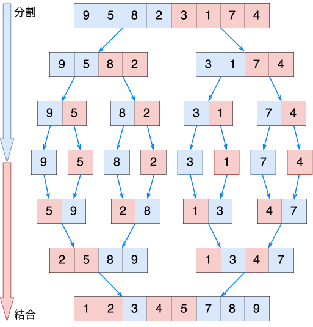
ちなみに私の手元のノートPCでランダムに並んだ1億個の整数をクイックソートで整列させると、計算時間は約6.7秒、メモリ消費は約763MiBでした。マージソートも十分に速いのですが、メモリ効率や局所参照性などの点でクイックソートの方が優れています。マージソートには、安定ソートであるという利点があります。また、外部ソート（大量のデータを外部メモリを使ってソートする）に適しています。
julia> let n=100000000, x=rand(1:n,n); @time sort(x, alg=QuickSort); end;
6.655825 seconds (2 allocations: 762.939 MiB)
julia> let n=100000000, x=rand(1:n,n); @time sort(x, alg=MergeSort); end;
9.778350 seconds (4 allocations: 1.118 GiB)さて、このように優れた整列アルゴリズムが知られているとすると、授業で最初に触れた挿入ソートはお払い箱でしょうか。実用的には問題サイズが小さいときや、もとからほとんどの要素が整列しているとわかっているときには依然として挿入ソートも用いられます。このような条件下ではクイックソートよりシンプルかつ高速だからです。
|
用語の整理 \(\text O\), \(\Omega\), \(\Theta\) は、1つの関数 \(T(n)\) の増え方を上下からおさえるための表記です。本文で扱った「問題の最悪時間計算量の下界」（どんなアルゴリズムを設計しても、これより速くは解けないという問題そのものの限界）とは意味が異なりますので、区別してください。 |
5. 発展：問題そのものの限界
5.1. 問題の最悪時間計算量の上界と下界
さて、整列問題などのコンピューター上で解くべき問題が与えられると、それが重要な問題である場合、研究者はその問題にこぞってとりかかります。プログラマやアルゴリズム開発者は、よりよい高速なアルゴリズムをどんどん開発して、上界を改善してゆきます。つまり、最悪時間計算量が既存のアルゴリズムより小さくなるような、新たなアルゴリズムを実際に提示してみせます。たとえば、これまでに知られていた最速のアルゴリズムの時間計算量が \(\text O(n^3)\) だとすると、あらたに、\(\text O(n^2)\) のアルゴリズムが開発できれば改善になります。こうして、研究が進むにしたがって上界をどんどん下にむかっておさえる方向に改善されてゆきます。
一方で、アルゴリズム解析の研究者は、ある問題が与えられたときに、その問題は、この先どれほど素晴らしいアルゴリズムが開発されても、最悪時間計算量が、これ以上は改善できないという下界を上にむかって押し上げる方向で問題に取り組みます。下界を示す際には、実際のアルゴリズムを示すことはまずありません。なぜなら、ある最悪時間計算量のアルゴリズムができるということは、すなわち、最悪時間計算量の上界を示すことになるからです。最悪時間計算量の下界の提示は、その下界よりも速い最悪時間計算量のアルゴリズムは存在しないという非存在証明なのです。
いずれにしても、問題の上界と下界は両方とも最悪時間計算量によって考えていることに注意をしてください。
下界証明の準備：なぜ証明が必要か
「もっと速いアルゴリズムがあるかもしれない」という疑問に答えるため、理論的な限界を証明する必要があります。
- 証明のアプローチ
-
-
どんなアルゴリズムでも避けられない「必要最小限の作業量」を見つける
-
その作業量から計算量の下限 「これより速くはできない」量を導く
-
この方法は、コンピューター科学で「不可能性の証明」を行う標準的な手法です。
以下では、具体的に整列問題の最悪時間計算量の下界証明をしてみます。
5.2. 整列問題の下界：結論と証明
比較だけで整列する場合、どんな正しいアルゴリズムでも、最悪の場合には \(\Omega(n\log n)\) 回の比較が必要です。 計数ソートは値を配列の添字に使うので、この「比較だけ」という前提に当てはまりません。
証明の骨格は、\(n!\) 通りの並び方を二択の質問で区別するには、少なくとも \(\log_2(n!)\) 回の質問が必要、というものです。
証明を読む（決定木・階乗・対数を使用。初読では省略可）
【定理】入力の並びに含まれる値の大小比較の情報のみを用いた整列アルゴリズムの最悪時間計算量の下界は、\(\Omega(n\log n)\) である。
つまり、比較に基づく整列問題は、どんなに頑張っても最悪時間計算量を \(n\log n\) のオーダーより改善することは原理的に不可能だという定理です。
まず、\(n\) 個の入力が持ちうる並べ方のバリエーションは、\(n\)個の順列ですので \(n!\) です。たとえば、3個のキー cat, dog, rat の並べ方は、3の階乗（\({}_3P_3=3!=6\)）個あります。
-
\(s_1=\langle\text{cat},\text{dog},\text{rat}\rangle\)
-
\(s_2=\langle\text{cat},\text{rat},\text{dog}\rangle\)
-
\(s_3=\langle\text{dog},\text{cat},\text{rat}\rangle\)
-
\(s_4=\langle\text{dog},\text{rat},\text{cat}\rangle\)
-
\(s_5=\langle\text{rat},\text{cat},\text{dog}\rangle\)
-
\(s_6=\langle\text{rat},\text{dog},\text{cat}\rangle\)
整列アルゴリズムは、このいずれの入力にも対応していなければなりません。つまり、\(n!\) 種類の入力に対応する必要があるわけです。ここで、入力の並びに含まれる値はすべて異なると仮定しています。最悪時間計算量を考える際には、この仮定をしておけば十分だからです（同じ値が存在すれば、入力の組合せの数は減るだけです）。
あらゆる入力を大小関係の比較情報のみで整列するには、大小比較で生じる場合分けを分岐点とする下図の例ような木を考えればいいことがわかります。この例では、入力に含まれる値の数は \(n=3\) です。
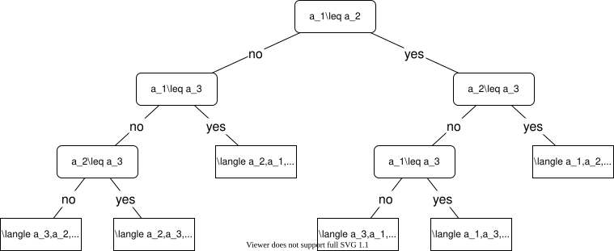
整列アルゴリズムを実行するときには、この木のうち、どこか1つの根から葉への経路をたどることになります。経路の長さ(たどった分岐の数)が、その入力に対する比較回数です。したがって、根から最も深い葉までの段数、すなわち木の高さ \(h\) が、最悪の場合の比較回数に対応します。
木の段数が1段増えると、対応できる入力の種類は高々2倍になります。よって、\(h\) 回の比較では、高々 \(2^h\) 種類の入力列の仕分け（ここでは整列）ができることになります。つまり、高々 \(2^h\) 個の順列を整列できることになります。実際に整列できるようにしたいのは、入力として想定される \(n!\) 個の順列です。つまり、\(n!\) 個の順列を十分に仕分けできるだけの比較回数 \(h\) を与えるには、
である必要があります。
ここで、以下の不等式を証明しておきましょう。
【証明】\(n\geq 1\) と仮定してよいから、両辺を2乗した以下の不等式を証明すれば良い。
左辺に着目すると…
最後の不等式は以下の事実より直ちに導かれます。\(f(k)=k\cdot((n+1)-k)=-k^2+kn+k\) は、\(1\leq k\leq n\) の範囲で変化し、上に凸な二次関数なので、\(k=1\) または \(k=n\) で最小値をとります。\(f(1)=f(n)=n\) より、\(f(k)=k\cdot((n+1)-k)\geq n\) が成り立ちます。
よって、
が成り立ちます。底が2の対数は単調増加関数ですから、両辺に対数を適用すると
よって、
となり、比較回数\(h\) を時間計算量としたときの下界が証明できました。対数の底は、定数倍の違いしかないので、計算量を考える際には重要ではないことに注意してください（ただし、底は1より大きいことを仮定します）。
この証明は、具体的な整列アルゴリズムを示していません。比較のみに基づく限りは、\(n\log n\) のオーダーより速いアルゴリズムは存在しないという非存在証明になっています。
また、この証明は情報理論的証明と呼ばれます。\(n!\) 個の順列のうちから1つの整列された値の列を特定するには、\(\log_2(n!)\) ビットの情報が必要です。ここで使った大小の二択の比較は、決定木を高々2つに枝分かれさせます。そのため、深さ h で区別できる場合の数は高々 \(2^h\) 通りです（個々の珍しい結果の自己情報量が必ず1ビット以下、という意味ではありません）。比較回数を \(h\) としたとき、比較によって元の順列がもつ以上の情報量を得なくてはならないため \(h\geq \log_2(n!)\) である必要があるからです。
5.3. 最適時間計算量
前節では、比較のみを用いた整列問題の時間計算量の下界が \(\Omega(n\log n)\) であることを証明しました。実は、整列問題では、マージソートやヒープソート等の具体的なアルゴリズムとして、上界が \(\text O(n\log n)\) であるアルゴリズムがすでに開発されています。つまり、下界と上界が一致しているのです。この場合の計算量は、上界と下界で抑えられているので \(\Theta(n\log n)\) と表記できます。これを、最適時間計算量とよび、これ以上は（定数倍等の要素を除き）アルゴリズムは改善できず、最も時間効率の良いアルゴリズムにたどり着いたことになります。くどいようですが、これは最悪時間計算量の観点からこれ以上改善できない最適なアルゴリズムが存在するということです。挿入ソートアルゴリズムは、もともと整列された入力データでは最良時間計算量 \(\text O(n)\) で計算できることを思い出してください。
整列問題は幸運な例ですが、世の中には、時間計算量の上界と下界が一致していない問題はたくさんありますので、アルゴリズム研究もまだまだ続くことになります。また、整列問題も、具体的に取り組んでいる問題によっては「値の情報として比較のみを用いる」という条件を緩和することができるかもしれませんので、もっと効率の良いアルゴリズムが設計できるかもしれません。
このあたりのせめぎあいを図にしてみました。
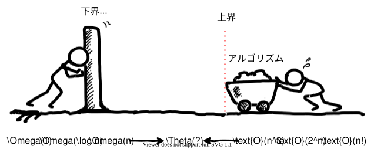
最適時間計算量が知られていない問題はたくさんあります。たとえば、行列の掛け算問題の時間計算量は、既知の下界 \(\Omega(n^2)\) に対して、よく知られたStrassenのアルゴリズムでも上界 \(\text O(n^{\log_2 7})\)（約 \(\text O(n^{2.8074})\)）が得られ、さらに小さい指数のアルゴリズムも研究されています。ここでは通常の算術演算を1回と数えるモデルを考えています。
実は理論上最速のアルゴリズムが、実際にプログラムを書いてみると最速であるというわけではありません。たとえば行列の掛け算では、行列の規模・メモリの使い方・並列化によって、演算回数が \(\text O(n^3)\) のよく最適化された実装のほうが速い場合があります。現実には、実際に扱う問題の入力サイズの規模で効率の良いアルゴリズムを選択したり、実装がシンプルでバグが混入しにくければ、多少遅くてもシンプルなアルゴリズムを選んだ方が良いということはよくあります。
|
コラム: 実用にならない改善に、なぜ意味があるのか
現実の計算時間の改善に結びつかないのなら、漸近的計算量の改善の追求は無意味なのでしょうか。そうではありません。 行列の掛け算が \(\text O(n^3)\) より速くできることを最初に示したのはシュトラッセン(1969年)でした。その核心は「2×2の行列の積は、8回ではなく7回の掛け算で計算できる」という代数的な構造の発見です。誰もが自明と思っていた計算に、実は無駄が潜んでいた——新しい上界の証明とは、このように問題に隠れていた構造を見つけ出すことに他なりません。以後の上界の改善競争は、速さの競争であると同時に、「行列の積とは何か」の理解を掘り下げる営みでもあるのです。 その理解がどこまで進んだかを測る目盛りが、上界と下界のギャップです。整列問題のように上下界が \(\Theta(n\log n)\) で一致すれば、問題の難しさの正体はそこで確定します。行列の掛け算では、知られている上界と下界にまだギャップが残っていますが、これは「本当は \(n^2\) に近い速さで掛けられるのか、それとも \(n^2\) では掛けられない本質的な理由があるのか」という問いが未解決だということです。ギャップを詰める研究は、この問いに答えようとする研究だといえます。 こうして得られた理論的な知見は、しばしば時間差で、あるいは別の場所で実を結びます。素数判定のAKSアルゴリズム(2002年)は、実用速度では従来の確率的アルゴリズムに及びませんが、「素数判定は決定的な多項式時間で解ける(Pに属する)」ことを確定させ、この問題の位置づけを永久に変えました。漸近的改善のために開発された証明技法やデータ構造が、後に別の問題で実用的なアルゴリズムを生むことも珍しくありません。漸近的計算量の研究は、個々のプログラムの速度改善というより、「計算という現象の地図」を描く基礎研究なのです。 |
7. 練習問題の解答
まず自分で解いてから読むことをすすめます。
下記の通り9回です。（入力サイズ6の場合、最大で15回、最小で5回の比較回数が必要です。）
| 列 | 比較回数 |
|---|---|
5 3 1 2 8 6 |
1 |
3 5 1 2 8 6 |
2 |
1 3 5 2 8 6 |
3 |
1 2 3 5 8 6 |
1 |
1 2 3 5 8 6 |
2 |
1 2 3 5 6 8 |
|
合計 |
9 |
\(n\) の値に対する関数の増加速度が以下の順番であることを踏まえれば、細かい計算は不要です。
\(T(n)=6n^3+9n^2+28\) で最も次数の多い項が、関数の増加速度を支配していますので、ただちに \(T(n)=\Theta(n^3)\) が得られます。
ここから、\(n^3\) と同じか、それ以上の増加速度の式については上界となります。つまり、\(T(n)=\text O(n^3)\) であり \(T(n)=\text O(n^4)\) でもあります。
また、\(n^3\) と同じか、それ以下の増加速度の式については下界となります。つまり、\(T(n)=\Omega(n^3)\) であり \(T(n)=\Omega(n\log n)\) でもあります。
よって、選択肢の中で該当するのは (b), (e), (f), (g) となります。
以上です